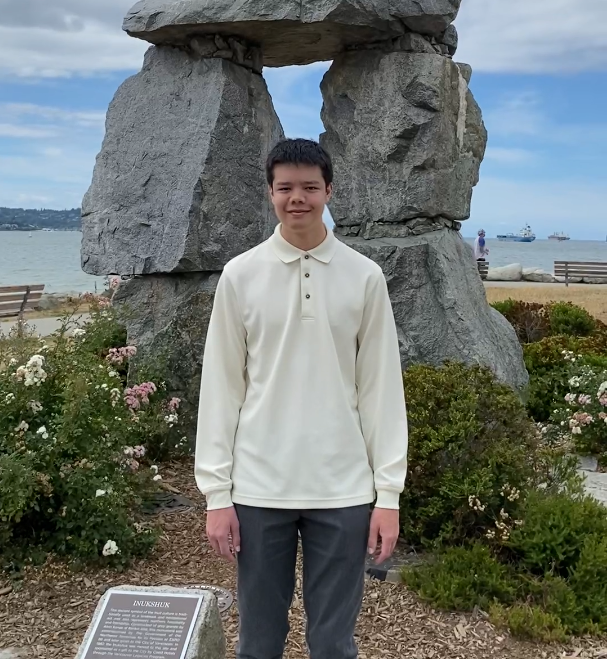

About Me
Education, Work, And Hobbies

Hi, I'm Lucas 👋
I'm a 3rd year Honours Geomatics Coop student at the University of Waterloo, currently pursuing my passion in tech. I'm a couple courses away from achiving my minor in Computing, and I'm exploring the idea of getting a second minor in Economics. Between semesters, I've aquired certificates in machine learning and data analytics to complement the computer science skills I'm developing at university. Along with this, I've taken an interest in doing projects with a focus on programming and application development to put the information I've learned into practice.
Over the course of my study, I had the opportunity to work with the Government of Canada as a Project Engineering Assistant, and with Prodigy Education as a QA Analyst. My experiences in both of these roles has been an excellent way for me to engage in work that I find challenging and meaningful, and it's been surreal to work alongside experts to create awesome things. I'm currently working with game developers to deliver a better 'post battle flow' sequence to their math game, which would maximize time time that stakeholders have to interact with the product, as well as improve membership conversion rates (revenue) for the business.
For hobbies, I really enjoy programming, travelling, and playing videogames. As of late, I've been playing a lot of Teamfight Tactics as the new update has been really fun. It's interesting to see how the game has organized features (traits, items, units) into a clear class heierarchy, and how effective that structure has been for the game as a whole. Another activity that I really enjoy is travelling. I've had the privilege to travel all around the world, and it's always been super interesting to explore different countries and learn about their history. In the photo above, I was visiting the Inukshuk monument in Vancouver. I've always found it super fascinating to see these sorts of things (I'm a lot happier in that picture than I actually look).
Thanks for checking out my website!